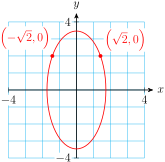
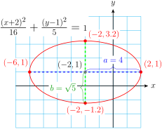
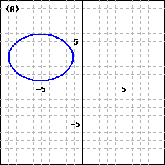
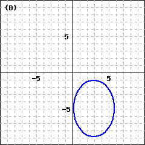
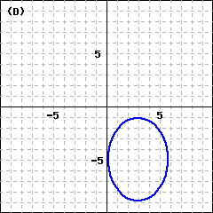
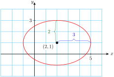

Section 9.3 Conic Sections: Ellipses
The graph of any first-degree equation in two variables,
is a line (as long as \(A\) and \(B\) are not both 0). A second-degree equation in two variables has the general form
where \(A\text{,}\) \(B\text{,}\) and \(C\) cannot all be zero (because in that case the equation would not be second degree). The graphs of such equations are curves called conic sections because they are formed by the intersection of a plane and a cone, as illustrated below. Except for a few special cases called degenerate conics, the conic sections fall into four categories called circles, ellipses, hyperbolas, and parabolas.

Conic sections whose centers (or vertices, in the case of parabolas) are located at the origin are called central conics.
Subsection Circles and Ellipses
The circle is the most familiar of the conic sections. Recall that the standard equation for a circle of radius, \(r\text{,}\) centered at the point \((h,k)\) is:
and a circle whose center is the origin has equation
If we divide through by \(r^2\text{,}\) we can also write this equation in the form
Notice that the denominators of both the \(x^2\)- and \(y^2\) -terms are \(r^2\text{.}\) You can check that the \(x\)- and \(y\)-intercepts of this circle are \((0, \pm r)\) and \((\pm r, 0)\text{.}\)
If the denominators of the \(x\)-squared and \(y\)-squared terms are not equal, the graph is called an ellipse. An ellipse is an elongated circle, or oval. Ellipses appear in a variety of applications. The orbits of the planets and of satellites about the earth are ellipses. The arches in some bridges are elliptical in shape, and whispering domes, such as the ceiling of the Mormon Tabernacle in Salt Lake City, are made from ellipses.
Recall that a circle is the set of all points in a plane that lie at a fixed distance from its center. An ellipse also has a geometric definition.
Definition 9.25. Ellipse.
An ellipse is the set of points in the plane, the sum of whose distances from two fixed points (the foci) is a constant.
Using the distance formula and the definition above, we can show that the equation of an ellipse centered at the origin has the following standard form.
Central Ellipse.
The equation of an ellipse centered at the origin is
By setting \(y\) equal to zero in the equation above, we find that the \(x\)-intercepts of this ellipse are \(a\) and \(-a\text{;}\) by setting \(x\) equal to zero, we find that the \(y\)-intercepts are \(b\) and \(-b\text{.}\)
The line segment that passes through the foci (labeled \(F_1\) and \(F_2\) on the graphs below) and ends on the ellipse is called the major axis. If \(a \gt b\text{,}\) the major axis is horizontal, as shown in the Figure below left. The \(x\)-intercepts are the endpoints of the major axis, so its length is \(2a\text{.}\) The vertical segment with length \(2b\) is called the minor axis. The endpoints of the major axis are the vertices of the ellipse and the endpoints of the minor axis are the covertices.

If \(a \lt b\text{,}\) the major axis is vertical and has length \(2b\text{.}\) In this case the endpoints of the major axis are the \(y\)-intercepts of the ellipse. (See Figure above right.) The minor axis is horizontal and has length \(2a\text{.}\)
The standard form of the equation for an ellipse gives us enough information to sketch its graph.
Example 9.26.
Graph \(\dfrac{x^2}{8}+\dfrac{y^2}{25}=1 \)
The graph is an ellipse with major axis on the \(y\)-axis. Because \(a^2 = 8\) and \(b^2 = 25\text{,}\) the vertices are located at \((0, 5)\) and \((0, -5)\text{,}\) and the covertices lie \(\sqrt{8} \) units to the right and left of the center, or approximately at \((2.8, 0)\) and \((-2.8, 0)\text{.}\)
To sketch the ellipse, we first locate the vertices and covertices. Then we draw a smooth curve through the points. The graph of \(\dfrac{x^2}{8}+\dfrac{y^2}{25}=1 \) is shown below.
Checkpoint 9.27. Practice 1.
Find the intercepts of the graph of \(\dfrac{x^2}{9}+\dfrac{y^2}{4}=1 \text{.}\) Separate different intercepts with a comma.
Graph the ellipse.
Checkpoint 9.28. QuickCheck 1.
To sketch an ellipse, we locate
two foci
center and radius
vertices and covertices
slope and intercepts
If \(a\gt b\text{,}\) is the major axis horizontal or vertical?
horizontal
vertical
The \(y\)-intercepts of a central ellipse lie
a
b
An ellipse is one of the four
conic sections
quadrants
formulas
solutions
The equation of any central ellipse may be written as
where \(A\text{,}\)\(B\text{,}\) and \(C\) the same sign. The features of the graph are easier to identify if we first convert the equation to standard form.
Example 9.29.
Graph \(4x^2 +y^2=12\)
First we convert the equation to standard form: we divide through by the constant term, 12, to obtain
Because \(a^2=3\) and \(b^2=12\text{,}\) the vertices are \((0,\pm 2\sqrt{3}) \) and the covertices are \((\pm \sqrt{3},0) \text{.}\) We plot points at about \((0, \pm 3.5)\) and \((\pm 1.7, 0)\text{,}\) then draw an ellipse through the points, as shown at right.
Checkpoint 9.30. Practice 2.


\(9x^2+8y^2=16\)
We can find coordinates of other points on an ellipse by substituting a value for one variable and solving for the other variable.
Example 9.31.
Find the exact coordinates of any points with \(y\)-coordinate 2 on the ellipse \(4x^2 + y^2 = 12\text{.}\) Plot and label those points on the ellipse.
Solve the equation \(4x^2 + y^2 = 12\) when \(y = -4\text{.}\) What do the solutions tell you about the graph of the ellipse?
-
We substitute \(y = \alert{2}\) into the equation and solve for \(x\text{.}\)
\begin{align*} 4x^2+(\alert{2})^2\amp = 12\\ 4x^2\amp = 8\\ x^2\amp = 2\\ x\amp= \pm \sqrt{2} \end{align*}There are two points with \(y=2\text{,}\) namely \(\left(\sqrt{2},2\right) \) and \(\left(-\sqrt{2},2\right) \)
-
We substitute \(y = \alert{-4}\) into the equation and solve for \(x\text{.}\)
\begin{align*} 4x^2+(\alert{-4})^2\amp = 12\\ 4x^2\amp = -4\\ x^2\amp = -1 \end{align*}Because there are no real solutions, there are no points on the ellipse with \(= -4\text{.}\)
Checkpoint 9.32. Practice 3.
Find the exact coordinates of all points with \(y\)-coordinate \(-1\) on the ellipse \(9x^2 + 8y^2 = 16\text{.}\)
Subsection Translated Ellipses
An ellipse whose center is at the point \((h, k)\) instead of the origin is said to be shifted or translated to that location.
Ellipse.
The standard equation for an ellipse centered at \((h,k)\) is
The horizontal axis of the ellipse has length \(2a\text{,}\) and the vertical axis has length \(2b\text{,}\) the same as for central ellipses. When \(a \gt b\text{,}\) the major axis is horizontal and the ellipse is short and wide. When \(a \lt b\text{,}\) the major axis is vertical and the ellipse is tall and narrow, as shown below.

Example 9.33.
Graph \(~~\dfrac{(x+2)^2}{16} + \dfrac{(y-1)^2}{5} = 1\)
Find the exact coordinates of the intercepts of the graph.
-
The graph is an ellipse with center at \((-2,1)\text{.}\) We have \(a=4\) and \(b=\sqrt{5}\text{,}\) and the major axis is parallel to the \(x\)-axis because \(a \gt b\text{.}\) We plot the vertices four units to the left and right of the center, a \((-6,1)\) and \((2,1)\text{.}\) The covertices lie \(\sqrt{5}\) units above and below the center, at approximately \((-2, 3.2)\) and \((-2, -1.2)\text{.}\) The graph is shown below.
 -
We set \(y=\alert{0}\) and solve the resulting equation to find the \(x\)-intercepts.
\begin{align*} \dfrac{(x+2)^2}{16} + \dfrac{(\alert{0}-1)^2}{5} \amp = 1 \amp\amp \blert{\text{Subtract}~ \dfrac{1}{5}~ \text{from both sides.}}\\ \dfrac{(x+2)^2}{16} \amp = \dfrac{4}{5} \amp\amp \blert{\text{Multiply both sides by 16.}}\\ (x+2)^2 \amp = \dfrac{64}{5} \amp\amp \blert{\text{Extract roots.}}\\ x+2 \amp = \pm \sqrt{\dfrac{64}{5}}\\ x \amp = -2 \pm \dfrac{8\sqrt{5}}{5} \end{align*}The \(x\)-intercepts are \(\left(-2 \pm \dfrac{8\sqrt{5}}{5}, 0\right)\) or approximately \((1.6,0)\) and \((-5.6,0)\text{.}\) We set \(x=\alert{0}\) to find the \(y\)-intercepts.
\begin{align*} \dfrac{(\alert{0}+2)^2}{16} + \dfrac{(y-1)^2}{5} \amp = 1 \amp\amp \blert{\text{Subtract}~ \dfrac{1}{4}~ \text{from both sides.}}\\ \dfrac{(y-1)^2}{5} \amp = \dfrac{3}{4} \amp\amp \blert{\text{Multiply both sides by 5.}}\\ (y-1)^2 \amp = \dfrac{15}{4} \amp\amp \blert{\text{Extract roots.}}\\ y-1 \amp = \pm \sqrt{\dfrac{15}{4}}\\ y \amp = 1 \pm \dfrac{\sqrt{15}}{2} \end{align*}The \(y\)-intercepts are \(\left(0, 1 \pm \dfrac{\sqrt{15}}{4}\right)\) or approximately \((0, 2.9)\) and \((0, -0.9)\)
Checkpoint 9.34. Practice 4.
-
Graph \(\dfrac{(x-5)^2}{15} + \dfrac{(y+3)^2}{8} = 1\)

 
Which of the above is the best match for the graph?
(A)
(B)
(C)
(D)
-
Find the coordinates of the vertices and covertices. Separate different points with a comma. Use “sqrt(2)” to get \(\sqrt{2}\text{.}\)
vertices:
covertices:
\(\text{(C)}\)
\(\left(8.87298,-3\right), \left(1.12702,-3\right)\)
\(\left(5,-0.171573\right), \left(5,-5.82843\right)\)
A graph is also shown below.
-
vertices: \((5-\sqrt{15}, -3)\text{,}\) \((5+\sqrt{15}, -3)\)
covertices: \((5, -3+\sqrt{8})\text{,}\) \((5, -3-\sqrt{8})\)
\(\dfrac{(x-5)^2}{15} + \dfrac{(y+3)^2}{8} = 1\text{:}\)
Checkpoint 9.35. QuickCheck 2.
To write the equation \(Ax^2 + By^2 = C\) in the standard form for ellipses, we divide through by
The \(x\)-coordinates of all points on a central ellipse \(\dfrac{x^2}{a^2}+\dfrac{y^2}{b^2}=1\) lie between and
In the standard form for an ellipse, \((h, k)\) are the coordinates of the
center
vertex
covertex
intercept
The vertical axis of an ellipse \(\dfrac{(x-h)^2}{a^2}+\dfrac{(y-k)^2}{b^2}=1\) has length .
Subsection Writing in Standard Form
Second-degree equations in which the coefficients of \(x^2\) and \(y^2\) have the same sign can be written in one of the standard forms for an ellipse by completing the square. The equation can be graphed easily from the standard form.
Example 9.36.
-
Write the equation in standard form.
\begin{gather*} 4x^2 + 9y^2 - 16x - 18y -11 = 0 \end{gather*} Graph the equation.
-
We first prepare to complete the square in both \(x\) and \(y\text{.}\) Begin by factoring out the coefficients of \(x^2\) and \(y^2\text{.}\)
\begin{gather*} \alert{4}(x^2-4x \underline{\hphantom{0000}}) + \alert{9}(y^2 - 2y \underline{\hphantom{0000}}) = 11 \end{gather*}We complete the square in \(x\) by adding \(\alert{4}\) to \(x^2-4x\text{,}\) and adding \(4 \cdot \alert{4}\text{,}\) or \(\blert{16}\text{,}\) to the right side of the equation. We complete the square in \(y\) by adding \(\alert{1}\) to \(y^2-2y\text{,}\) and \(9 \cdot \alert{1}\text{,}\) or \(\blert{9}\text{,}\) to the right side.
\begin{gather*} 4(x^2-4x+\alert{4}) + 9(y^2 - 2y + \alert{1}) = 11 + \blert{16} + \blert{9} \end{gather*}We write each term on the left side as a perfect square to get
\begin{align*} 4(x-2)^2 + 9(y-1)^2 \amp= 36 \amp\amp \blert{\text{Divide both sides by 36.}} \\ \frac{(x-2)^2}{9} + \frac{(y-1)^2}{4} = 1 \end{align*} -
The graph is an ellipse with center at \((2, 1),~a^2=9\text{,}\) and \(b^2=4\) The vertices lie 3 units to the right and left of the center at \((5,1)\) and \((-1,1)\text{;}\) the covertices lie 2 units above and below the center at \((2,3)\) and \((2,-1)\text{.}\) The graph is shown below.

Caution 9.37.
When completing the square in the Example above, do not forget the coefficients you factored out in the first step. When we add 4 to complete the square in \(x\text{,}\) it is multiplied by a factor of 4, so we must add \(4 \cdot 4\) or 16 to the right side of the equation. Similarly, we must add \(9 \cdot 1\) or 9 to the right side when we complete the square in \(x\text{.}\)
Checkpoint 9.38. Practice 5.
-
Write the equation \(x^2 + 4y^2 + 4x - 16y + 4 = 0\) in standard form: \(\dfrac{(x-h)^2}{a^2} + \dfrac{(y-k)^2}{b^2} = 1\)
\(h=\), \(k=\), \(a^2=\), \(b^2=\)
Graph the equation.
\(x^2 + 4y^2 + 4x - 16y + 4 = 0\text{:}\)
Subsection Finding the Equation of an Ellipse
To write the equation of an ellipse from a description of its properties, we must find the center of the ellipse and the lengths of its axes. We can then substitute this information into the standard form.
Example 9.39.
Find the equation of the ellipse with vertices at \((3,3)\) and \((3,-5)\) and covertices at \((1,-1)\) and \((5,-1)\text{.}\)
You may find it helpful to plot the given points to help you visualize the ellipse. The center of the ellipse is the midpoint of the major (or minor) axis.
Thus, the center is the point \((3, -1)\text{.}\) The horizontal axis is shorter, and \(a\) is the distance between the center and either covertex, say \((5, −1)\) Thus,
The value of \(b\) is the distance from the center to one of the vertices, say \((3,3)\text{:}\)
The equation of the ellipse has the form
The equation of the ellipse has \(h=3\text{,}\) \(k=-1\text{,}\) \(a=2\text{,}\) \(b=4\text{.}\) Thus the equation is
If we clear this equation of fractions and expand the powers, we obtain the general form
Checkpoint 9.40. Practice 6.
Exercises Problem Set 9.3
Warm Up
1.
Write the standard form for a circle.
Divide both sides of this equation by \(r^2\text{.}\)
Compare the new equation with the standard form for an ellipse. What do you notice?
2.
Graph the circle \(\dfrac{x^2}{4}+\dfrac{y^2}{4}=1 \)
3.
Solve the system \(\begin{aligned}[t] 3x + 2y \amp = 6\\ -4x-3y \amp = -10 \end{aligned}\)
4.
Find all points with \(x\)-coordinate 1 on the graph of
5.
Find the \(x\)-intercepts and the vertex of the graph of \(y = -0.5(x + 6)(x - 4)\)
6.
Write an equation for the circle with center \((-4, 5)\) and radius 8.
Skills Practice
Exercise Group.
For problems 7–12, graph the circle or ellipse.
7.
\(4x^2=16-4y^2\)
8.
\(\dfrac{x^2}{16}+\dfrac{y^2}{4}=1\)
9.
\(\dfrac{x^2}{10}+\dfrac{y^2}{25}=1\)
10.
\(3x^2+4y^2=36\)
11.
\(x^2=36 - 9y^2\)
12.
\(3y^2=30-2x^2\)
Exercise Group.
For problems 13 and 14
Fiind the equation of the ellipse.
Use your equation to complete the table.
13.
| \(x\) | \(0\) | \(\hphantom{-3}\) | \(-2\) | \(\hphantom{\pm\sqrt{2}}\) |
| \(y\) | \(\hphantom{-2}\) | \(0\) | \(1\) |
14.
| \(x\) | \(0\) | \(\hphantom{-3}\) | \(1\) | \(\hphantom{\pm\sqrt{2}}\) |
| \(y\) | \(\hphantom{-2}\) | \(0\) | \(\hphantom{-2}\) | \(-4\) |
Exercise Group.
For problems 15-18, each equation is a circle or ellipse.
State the radius or the lengths of the axes of the graph.
Give the exact coordinates of all points on the graph with the given \(x\)- or \(y\)-coordinate.
15.
\(y^2=4-x^2;~~~x=-1\)
16.
\(y^2=6-4x^2;~~~y=2\)
17.
\(4x^2=12-2y^2;~~~x=4\)
18.
\(6x^2=8-6y^2;~~~x=\sqrt{2}\)
Exercise Group.
For problems 19 and 20,
Graph the ellipse.
Give the exact coordinates of any four points on the ellipse.
19.
\(\dfrac{(x-3)^2}{16}+\dfrac{(y-4)^2}{9}=1\)
20.
\(\dfrac{(x+2)^2}{6}+\dfrac{(y-5)^2}{12}=1\)
Exercise Group.
For Problems 21–24:
Write the equation in standard form.
Graph the equation.
21.
\(9x^2+4y^2-16y=20\)
22.
\(9x^2+16y^2-18x+96y+9=0\)
23.
\(8x^2+y^2-48x+4y+68=0\)
24.
\(x^2+10y^2+4x+20y+4=0\)
Exercise Group.
For Problems 25–28, write an equation for the ellipse with the properties given.
25.
Center at \((1,6) \text{,}\) \(a=3\text{,}\) \(b=2\)
26.
Vertices at \((3, 2)\) and \((-7, 2)\text{,}\) minor axis of length 6
27.
Covertices at \((3,7)\) and \((3,-1)\text{,}\) major axis of length 10
28.
Vertices at \((-4, 9)\) and \((-4, -3)\text{,}\) covertices at \((-7, 3)\) and \((-1, 3)\)
Applications
29.
The arch of a bridge forms the top half of an ellipse with a horizontal major axis. The arch is 7 feet high and 20 feet wide.

Find an equation for the ellipse.
How high is the arch at a distance of 8 feet from the peak?
30.
A doorway is topped by a semi-elliptical arch. The doorway is 230 centimeters high at its highest point and 200 centimeters high at its lowest point. It is 80 centimeters wide.

Find an equation for the ellipse.
How high is the doorway 8 centimeters from the left side?
31.
The wing of a World War II British Spitfire is an ellipse whose major axis is 48 feet. The minor axis is 16 feet, but part of the ellipse is cut off parallel to the major axis. This cut edge is 46 feet long.
Find an equation for the ellipse.
How wide is the wing at its center? Round your answer to two decimal places.
32.
The centerline of a sailboat from bow to stern along the bottom (its keel) is elliptical in shape, with a major axis of 360 centimeters. The minor axis of the ellipse is 100 centimeters, but the deck of the sailboat (the top of the ellipse) has been cut off parallel to the major axis. The deck of the sailboat is 330 centimeters long.
Find an equation for the ellipse.
What is the maximum distance from the deck to the bottom of the keel? Round your answer to two decimal places.